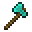

PHASE-03
PHASE-03には「新ウェポン」「新アリーナ」が追加されます。
さらに、各種ウェポンの調整が入ります。
HELLO NEWCOMER
スピア― ❝Spear❞

海に生息する毒をもつフグがイミテイターとしてBowyersMCへ参戦します。
使用時に纏う攻撃性の高いフグたちが、鎧を喰いつくすために突撃してきます。
3匹分を如何に叩きこめるかで、即決着をつけられる破格の生成系ウェポン。
しかし、この3匹のフグは使用者に対しても始めの数秒間はかなりのデバフを与える。
更に詳しい情報はウェポン紹介ページより。
HELLO NEW ARENA
地下鉄 ❝Metro❞

高所有利の戦場にはもううんざりだ。
地下鉄とその駅をモチーフとしたアリーナがPHASE-03から登場します。
高所移動系ウェポンに圧倒的勝機を見いだせ！
NEW MODE BETA-TEST
レベリング ❝Leveling❞

PHASE-03ではオペレーターのみが、アリーナ作成できる新モード「レベリング」が試験的に追加されます。
このモードはデスマッチ形式で、何度も復活でき、全てのウェポンを使い切った弓師が勝利になるゲームモードです。
PHASE-04での実装を念頭に、不定期でベータテストを開始します。
更に詳しい情報はLeveling概要ページより。
WEAPON ADJUSTMENTS
PHASE-02での弓師の意見を大いに受け入れ、ウェポンのバランスが調整されます。
 バステト ❝Leaper❞
バステト ❝Leaper❞
・手に持っているときにダイヤモンドブロックの効果を強化する能力の追加
 リーパー ❝Leaper❞
リーパー ❝Leaper❞
・クールタイムを9秒から10秒に増加
 ドーピング ❝Doping❞
ドーピング ❝Doping❞
・ヘイズのデバフ効果を受けていた問題を修正
 シールド ❝Shield❞
シールド ❝Shield❞
・チャージを画面上の文字ではなく経験値バーによる減衰で確認できるように変更
 ショックウェーバー ❝ShockWaver❞
ショックウェーバー ❝ShockWaver❞
・一度だけウェーブを視点方向XZに当たり判定込みで飛ばす左クリックトリガーの追加
・デバフ適応時間が短くなっていた問題を修正
 トラッパー ❝Trapper❞
トラッパー ❝Trapper❞
・現在地から罠発動地点への距離を把握できるように距離表示を追加
・発動した罠の消滅時間を経験値バーで確認できるような能力を追加
・キルされた時に、発動した罠が速攻で消滅するように変更
 パラレル ❝Parallel❞
パラレル ❝Parallel❞
・ウェポン使用時、発動地点とテレポート地点の直線距離に応じた硬直デバフを追加
 ヴァニッシャー ❝Vanisher❞
ヴァニッシャー ❝Vanisher❞
・相手がさらに心拍上昇効果音を受けやすくなるように変更
・弓を構えているときにのみ現れる、殺気のパーティクルを追加
バトルアックス ❝BattleAxe❞
・右クリックで発動可能な、当たり判定のあるスピンアタックを追加
・広範囲のガラスを破壊する能力を削除
 ビーム ❝Beam❞
ビーム ❝Beam❞
・射撃速度を上昇
SYSTEM ADJUSTMENTS
・通常ゲームを「フェージング Phasing」という名称に変更
・ゲーム内チャットからエントリー中を除外
・自他の総合データを確認するコマンドアイテムを追加
・ウェポンの説明欄を文章からステータス表示に変更
・ティアにSEVENとEIGHTを追加
・ティアのDiscord通知カラーをMinecraft内のカラーコードに変更
・残りのカラーマントと、フグのマントを追加
ACCEPT REQUEST
マントを通常時でも設定できるように変更
・依頼人: いのは#5118
・依頼日時: 2023/03/02 19:10
残り1秒の時とCTが終わってる時の違いを区別
・依頼人: くたくた(kutakuta15)#5173
・依頼日時: 2023/03/03 16:09